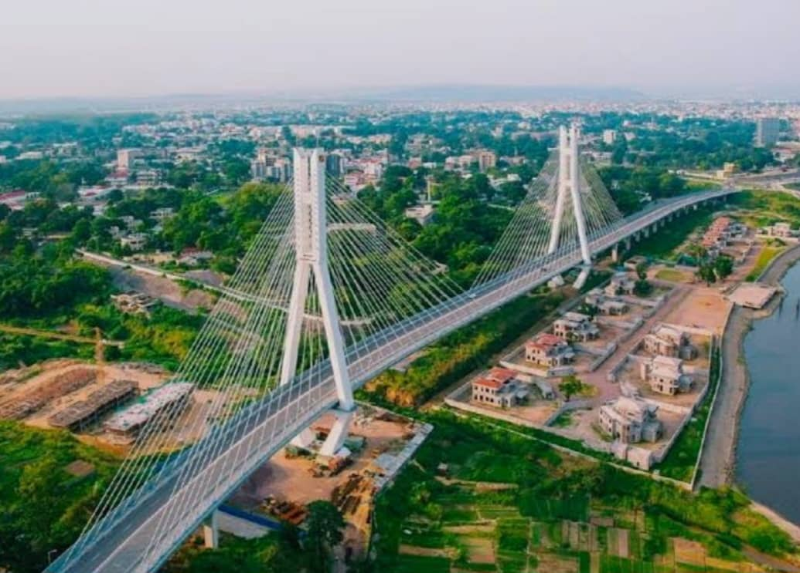

La ville de mes rêve c'est Brazzaville, elle se situe en Republique du Congo; c'elle si est la Capitale Polique de ce pays. Brazzaville est la plus belle ville que j'ai vue de toute ma vie, sans doute parce que je ne suis pas encore aller dans hors pays. Elle (9) neuf arrandissements;le centre ville c'est top, là-bas en y trouve la Corniche, le Mémorial Savorgnon et la Tour Nambemba. La plus par des belle structure y sont. Je sais que mon pays n'est pas dévéllopé mais moi je la trouve extrahordinaire.
